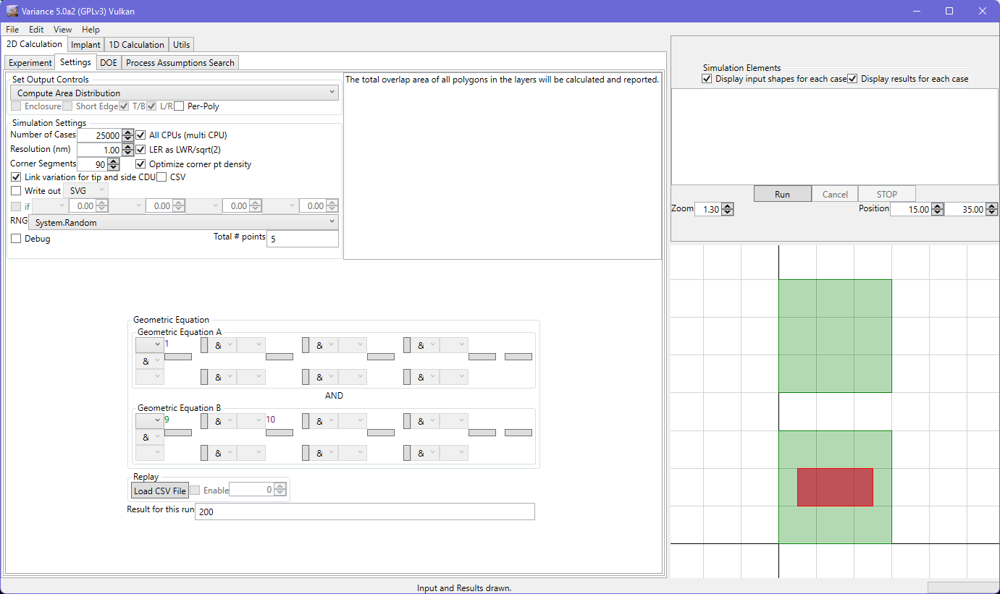

Layers that are using GDS or Oasis for input will have a 'use for DOE' checkbox in their settings.
The offset values allow you to define the lower left corner position of the first tile of interest, with respect to the 0,0 world position.
‘Use Specific Tiles’ allows you to use the described syntax to define which tiles should be evaluated.
‘Use iDRM CSV’ allows you to load in an iDRM CSV file and the tool will then automatically run all pass tiles for the simulation.
‘Use Quilt CSV’ allows you to load in a CSV file from the Quilt pattern generator. This will automatically configure the DOE grid to match the Quilt output.
By default, the system will work from the origin, and the DOE layout is expected to have its lower left corner at the origin. Negative column and row offsets are supported. The lower left corner of the extracted tile is repositioned at the world origin for the simulation, so you can configure interacting shapes without worrying about the location of the DOE tile.
The system will run the simulations configured for each tile in each row, running from left to right. At the time of writing, the user has the option to denote one specific tile (row/column combination) in the DOE layout for evaluation instead of the full set of tiles. For the settings shown earlier, with the specific tile set, the simulation result looks like this.
Duplicated polygons in the same layer are ignored during tile extraction; partial overlaps between polygons are resolved with a Union() operation to create a single polygon island of the final shape. The DOE tile can be contoured using the shape engine as well.
Assuming CDU/biasing is enabled, the tile extraction is performed before biasing/CDU and subsequent overlap resolution.
Note that the layer panel previews can be configured to show the full DOE layout or the extracted tile.